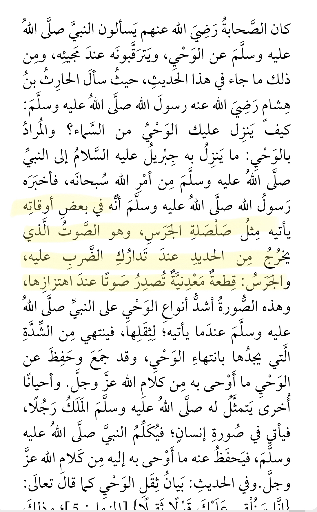

Abu Hurayrah (may Allah be pleased with him) reported that the Messenger (may Allah's peace and blessings be upon him) said: "The bell is the musical instrument of the Satan."
Sahih/Authentic. - [Muslim]
With this hadith in mind, some people have argued that Muhammed SAW was receiving revelation from Satan due to the following hadith:
‘Aisha (Allah be pleased with her) narrated that Al-Harith bin Hisham asked Allah’s Messenger (Allah bless him and give him peace), “O Allah’s Messenger! How is the Divine Inspiration revealed to you?” Allah’s Messenger replied, “Sometimes it is (revealed) like the ringing of a bell, this form of Inspiration is the hardest of all, and then this state passes off after I have grasped what is inspired. Sometimes the Angel comes in the form of a man and talks to me, and I grasp whatever he says.” ‘Aisha added: Verily, I saw the Prophet being inspired divinely on a freezing day and noticed the sweat dripping from his forehead (as the Inspiration was over).” [Bukhari]
However if we analyse each hadith properly we realise that Muhammed SAW is not saying the sound is that of a bell, but it’s sometimes revealed like the ringing of a bell
The Prophet’s description (Allah bless him and give him peace) of revelation being like the ringing of a bell was not the physical bell or its sound, but likely a reference to what it felt like, for example, the vibrations of a ringing bell.
We know that revelation used to have a even physical effects on Muhammed SAW because of its magnitude, which is mentioned in the rest of this hadith.
"Sometimes it is (revealed) like the ringing of a bell, this form of Inspiration is the hardest of all and then this state passes off after I have grasped what is inspired. Sometimes the Angel comes in the form of a man and talks to me and I grasp whatever he says." 'Aisha added: Verily I saw the Prophet being inspired divinely on a very cold day and noticed the sweat dropping from his forehead (as the Inspiration was over). (Sahih Al-Bukhari)
Given the context mentioned and the fact that Muhammed SAW mentioned the ringing of a bell as the hardest form of inspiration, it becomes clear that this is not in reference to the instrument of a bell but rather the physical experience of the revelation, something completely different to musical sounds
Additionally, why would Satan make Muhammed SAW tell people that bells are the musical instrument of Satan to make people avoid it, is that not working against himself?
Moreover, if one were to say that this is the only effect of revelation had unto the prophet, perhaps the claim would have more significance. But we know of the authentically transmitted reports which demonstrate all the physical effects that revelation put on him

In bukhari’s Sharh of this Hadith he explains that
“it is the sound that resembles that of when a piece of iron is struck, and as for the likening to the bell: it is a piece of metal that makes [the same type of] sound when it is shaken”
Thus, the hadith is not actually in reference to the bell itself as a musical instrument, but rather, the similitude of vibrations caused due to the material of that جرس, which is described as a piece of metal.
So once again we demonstrate it is the effect of physicality which occurs during revelation, the way that the prophet experiences the vibrations and sound during revelation is that like of the sound made when a piece of iron is struck.
If one were to actually read these hadiths carefully instead of gloss over them like a fool, they would notice that,
The first hadith is in reference to the bell itself used as an instrument
ie to effectively manipulate its tones using different strengths of striking it in order to produce a rhythm composed of different sounds of different frequencies
As for the hadith likening some parts of revelation to the sound of a bell.. it is to do with the single sound and vibration caused when a piece of metal is struck. Not to do with any instrumental modality or producing a musical rhythm.
The bell being instrument of Satan is the reference to the physical musical instruments which people play and since these are means of by which hearts of the people can be strayed from the remembrance of Allah is why the Prophet referred to in a tradition that this bell can be used as a means to take people attention away from Allah. For instance the modern technology used to play music may also be referred to as an instrument of Satan in this case.
As for like of ringing of bell that the Prophet (SallAllahu alaihi wassallam) heard was not the physical bell. It is the spiritual bells or spiritual sounds from the unseen that he translated as conveying knowledge of revelation to him.
This method of inspiration which he referred to like ringing of bell is a reference to those around him to explain in simple terms so that they could relate to as to what he was experiencing.
Therefore the musical instrument he referred to as a tool of satan and what he heard are 2 completely different things.
———
In Fath Al Bari, Sheikh Ibn Hajar al Asqalani himself addresses this issue, centuries ago, just as many of his contemporaries did
If the anti Islamic apologist thinks he’s some genius for coming up with this claim, then let him know that he is an idiot, since the Islamic scholars over 700 years before him had already discussed this issue in depth
In Fath Al Bari:
The Prophets صلى الله عليه و سلم saying in the narration, “like the ringing of a bell”
It has been described as a sound which is recurring and not known by hearing only the first occasion or first ring. Al-Karmanee said, “The bell is a small object containing a piece of copper which is hung on the camel, when the camel moves the copper sways back and forth hitting the outer portion of the bell and making the ringing noise.” If it were to be said that something of a lowly nature shouldn’t be compared to that which is blessed (The Wahi), since the bell is actually prohibited from use and the angels do not accompany a group using a bell as was reported by Imam Muslim, Abu Dawood, and others, So how can the actions of the angel (Jibriel) be compared to something such as a bell which the angels do not come near to the ringing of bells? The answer is that it’s not incumbent that the two things being compared share all the same attributes or even the most common attribute, rather it is sufficient to compare two things if they share any attribute. The intent was for the listener to be able to compare it to something familiar. A sound has two parts, its strength and its type. The similarity here lies in the strength of the sound, while the musical sound of a bell itself is something disliked and described as the instrument of the shaytan (satan).
The wisdom behind the strength of the sound is that the wahi would command his full attention and he would not hear anything else while revelation was being revealed to him. This issue will be further explained with the narration of Ibn Abaas, “When Allah decrees a matter in the heavens, the angels strike their wings” with the verse,
“...until, when terror is removed from their hearts...”{34:23}
From this, we understand and further underpin the above argument:
The comparison to the bell is to emblematise the magnitude of vibration and not the rhythmic sound itself
The comparison is effectively to illuminate a common ground for which the companions could understand and fathom the modality of this method of revelation. If one could not compare two things in order to make the understanding of one of those things easier, what’s the point of comparisons to even exist?
The Prophet’s description (Allah bless him and give him peace) of revelation being like the ringing of a bell was not the physical bell or its sound, but is a similie to describe one aspect of how revelation came to him. This is not likening it to the sound of a bell in every aspect, but merely with one characteristic. When someone is said to be ‘like a lion’ that is not to say that they have manes and live in the jungle, but that they share the characteristic of strength or courage with a lion.
Imaam As-Suyooti, may Allaah have mercy upon him said,
"If it is said how is a praiseworthy matter likened to a dispraised thing? For the ringing of the bell, which is authentically proved to be forbidden and that the Angels do not accompany travelers who have with them a bell, the answer shall be: In similes it is not necessary that the two ends of the simile are identical in all characteristics; it is enough that they share one characteristic. The simile in the Hadeeth is to represent what is intangible by mentioning something the audiences are familiar with in order to be easily understood."
Examples of similes like these are employed in other Ahadeeth aswell.
It is narrated on the authority of Abu Huraira that the Messenger of Allah (ﷺ) said:
Verily the faith would recede to Medina just as the serpent crawls back into its hole.
Sahih Muslim 147
Is Muhammed SAW saying Eman is like a snake in every aspect, when the killing of snakes has been enjoined in many hadiths? Or how Satan was said to approach Adam as a snake in the bible?
No, this is just likening Eman to a snake in a single characteristic and not in every aspect, and that is not a similitude of its essence, but rather a similitude between action to demonstrate a comparison easy for people to understand.
May Allah increase the common sense of and the reading comprehension abilities of anti Islamic polemicists so they do not continue to make stupid claims such as these.
————————————————————